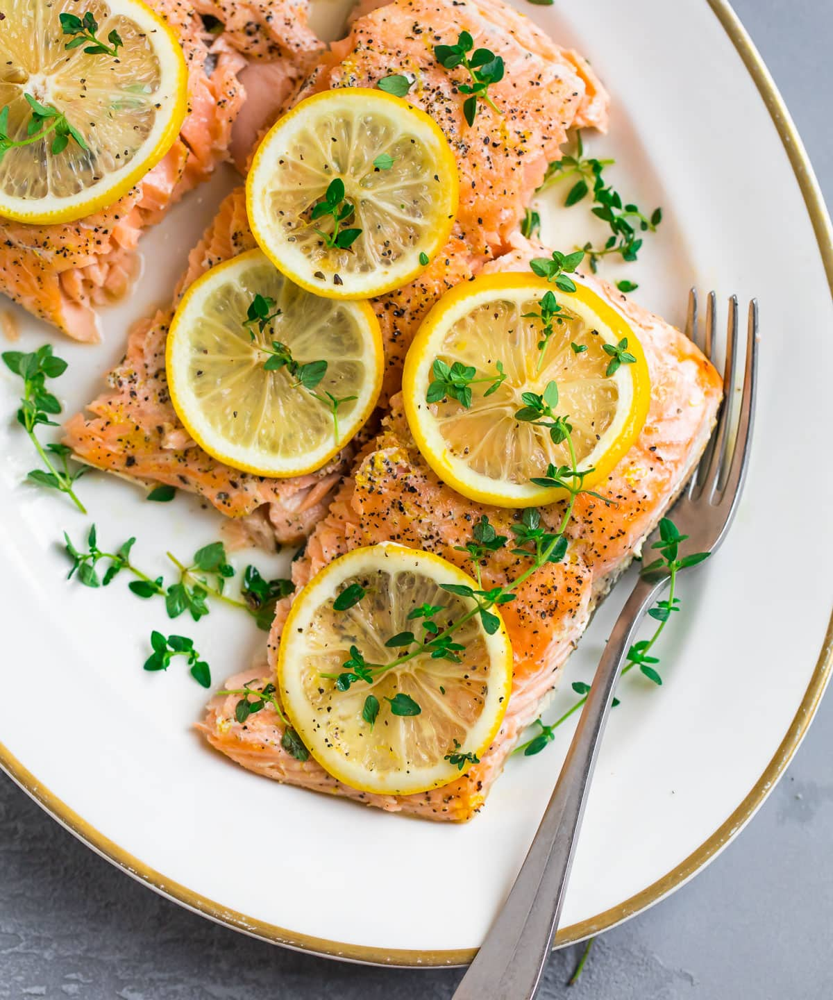

Lemon Pepper Salmon

Description:
Lemon pepper salmon. Baked in the oven in tin foil with other ingredients. This is the best, cheap recipe I've found to bake salmon without an excess of fats leaking out. It also
Ingredients:
- Long grain white rice
- Medium grain white rice
- short grain white rice (not sushi rice)
Steps:
- First, place your salmon on a plate and allow to come to room temperature. This will help it cook evenly all the way though.
- Next, grab a large piece of aluminum foil, and place it on your baking sheet. Spray lightly with nonstick spray, and lay down a row of your fresh herbs (I used thyme) and lemon slices.
- Take your piece of salmon, and lay it over the herbs and lemon. Top it with lemon zest, lemon juice, and salt and pepper. Flavor baby!
- Now, you’re ready to seal up the packet of yummy flavors and salmon. Make sure there’s enough to fully cover the salmon piece, leaving some room for air to circulate.
- Then, move your baking sheet with the foil packet to the oven and bake at 375 degrees F for 15-20 minutes, until the salmon flakes easily with a fork.
- When you’re ready to serve, top your salmon with additional fresh herbs (I added some extra thyme) or lemon juice. Voilà!